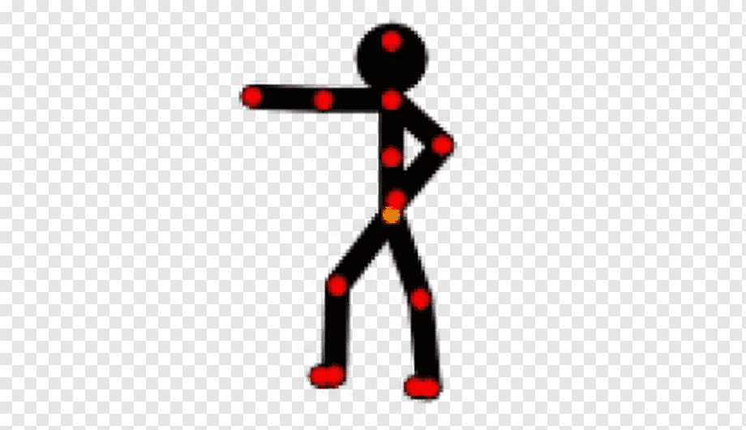
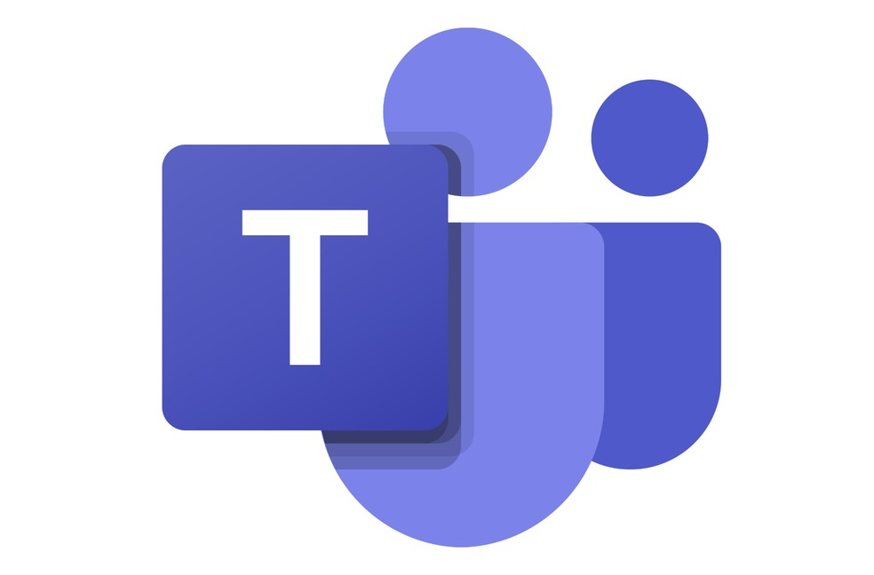

AnyDesk
Notepad++
clique aqui para baixar o Notepad++ versão 32 bitsclique aqui para baixar o Notepad++ versão 64 bits
Netbeans
Pivot Animator
clique aqui para baixar o Pivot AnimatorMicrosoft Teams
clique aqui para baixar o Microsoft TeamsPostman
clique aqui para baixar o Postman versão 32 bitsclique aqui para baixar o Postman versão 64 bits